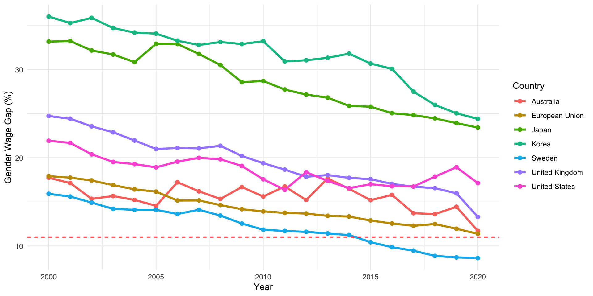
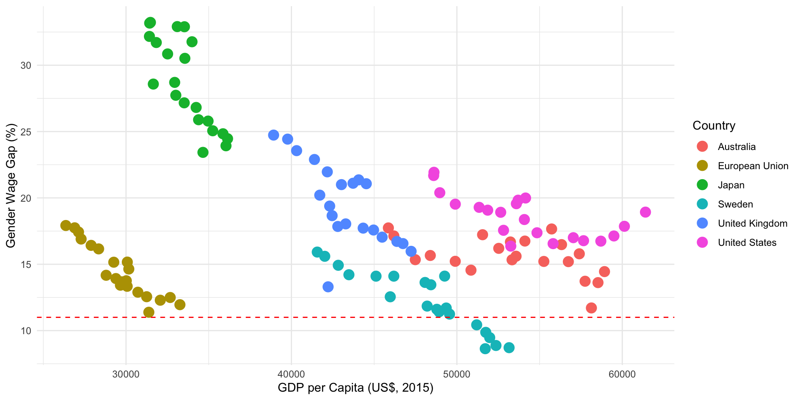
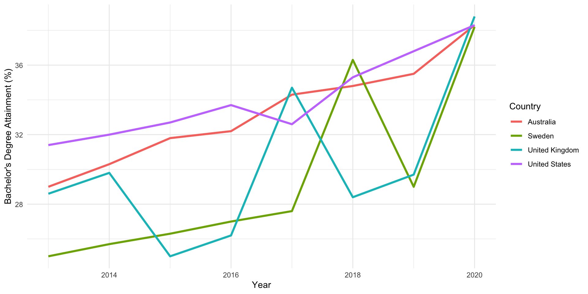
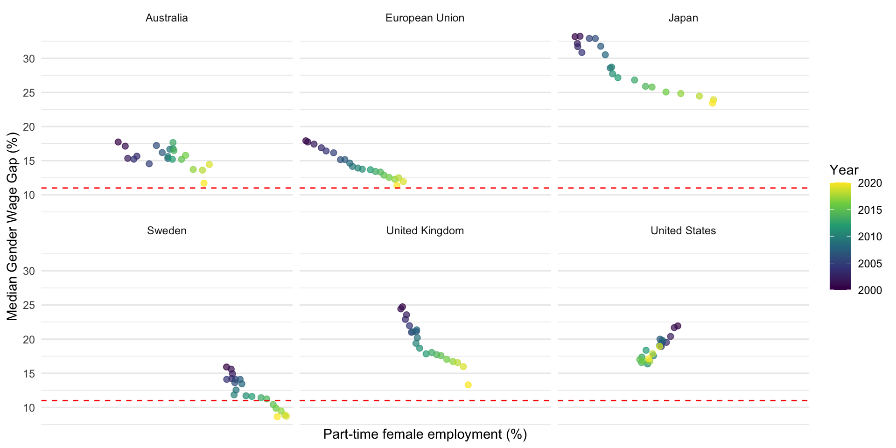

What Explains the Gender Pay Gap Across Countries?
Muhammad Nor Hakim bin Mad Yusof (28693310)
Chanya Kitprapa (34684824)
Janhavi Bayanwar (35579331)
Dataset description
- 7 developed countries: Australia, UK, US, Sweden, Japan, Korea, EU
- Timeframe: 2000–2020
- Data sources: OECD and World Bank data portals
- Key variables:
- GDP per capita (US$, 2015)
- Female labor force participation (%)
- Female part-time employment (%)
- Female education attainment (Bachelors or equivalent)
Methods
\[
\text{Wage Gap} = \frac{\text{Men's median pay} - \text{Women's median pay}}{\text{Men's median pay}} \times 100
\]
Time series plots were used to observe trends and variations and to compare against the OECD average of 11%
Tools: R packages (tidyverse, ggplot2)
Results - Gender wage gap
Gender wage gaps declined in all countries studied
Korea and Japan: highest, slowest to improve
Sweden and EU: lowest gaps, most consistent improvements
Australia, UK, US: moderate progress with fluctuations

Figure 1: Gender wage gap across countries (2000-2020)
Results - GDP vs Gender wage gap
No clear relationship between high GDP and low wage gaps
Example: US and Australia have high GDP but still notable wage gaps
Structural factors matter more than income level

Figure 2: Gender wage gap vs GDP per capita across countries (2000-2020)
Results - Women’s education attainment
- All countries saw an increase in female bachelor’s degree attainment
- Most countries converged above 36% by 2020
- Higher education ≠ lower wage gap

Figure 3: Evolution of female education attainment across countries (2013-2020)
Results - Female part-time employment vs gender wage gap
- Positive correlation: more female part-time → higher wage gap
- Japan and UK showed strongest relationship
- Sweden maintains low wage gap despite high part-time rates

Figure 4: Gender wage gap vs Part-time female employment (2000-2020)
Conclusion
Gender wage gaps are narrowing overall, but unevenly
Progress depends on consistent, structural policy interventions
Economic equity benefits individuals and the broader economy
Cultural change and leadership access are key to long-term equity
Recommendations
- Enforce pay transparency and gender pay reporting
- Expand access to childcare and flexible work
- Promote women in leadership through quotas or sponsorship
- Track wage gaps with standard indicators
- Encourage girls in STEM and eliminate biased hiring